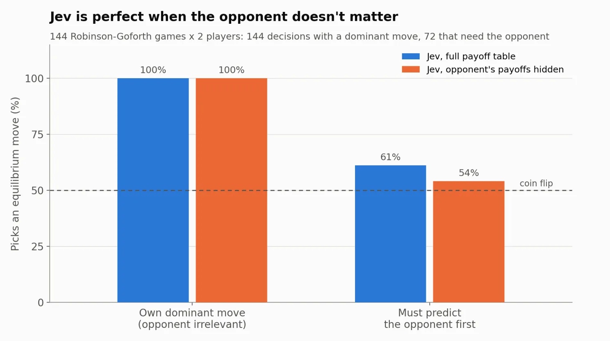
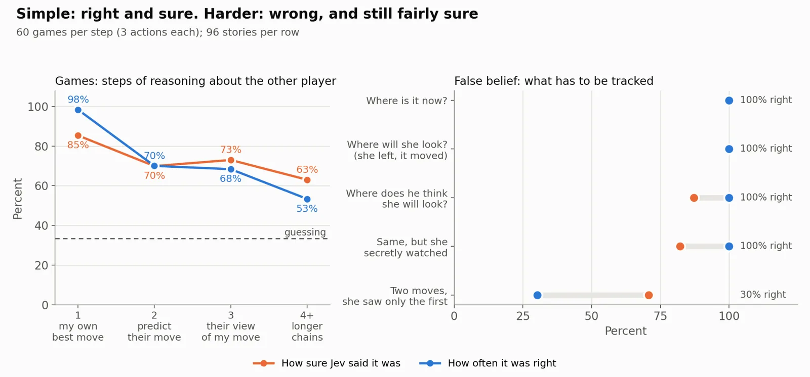

A warning against using Jev to make critical decisions
TL;DR
Jev is fast and cheap, but it appears to be a statistical choice model, not a decision model. It can score options; it does not reliably determine the right action. For now, businesses should be cautious about using it for high-stakes decisions where dependencies and the cost of being wrong matter.
One of the lessons I’ve learned over my years of consulting and running projects is that there are actually three overlapping types of decisions: statistical decisions, right decisions, and trustworthy decisions.
As an example, if you’re going to propose changing the price of a product or a quote, you may evaluate the customer’s estimated probability to buy at a specific price. Whether the statistical decision you make based on this estimate turns out to be right or wrong is still subject to chance. A great book about the difference between making the right decision and getting the right outcome for the wrong reasons is Fooled by Randomness.
But convincing a business organization to approve the quote requires a trustworthy decision: one that is aligned with the methodology and goals of the organization.
TypeSafe describes Jev as a model ’built to make fast, structured decisions.’ This article tests which of the three kinds of decision it actually makes.
Jev’s predecessor and benchmarking
A few months ago, I wrote How to Fake a Theory of Mind. While introduced in a cutesy way, the goal was to ask whether LLMs can be trained to make rational decisions. The setup may be similar in spirit to Jev: a small LLM, fine-tuned with synthetic data (Nash equilibria from randomly generated games), with probabilities from logits as the output rather than generated text.
My model learned to map a game’s payoffs to the correct rational decision. And to test it, I created a benchmark consisting of several decision types, which provided a good way to test TypeSafe’s claims.
Jev’s performance on rational decisions
In rational games, a player makes a decision that is optimal based on a payoff table. In a simple case, there is a dominant strategy where one choice is right regardless of your opponent. In the canonical Prisoner’s Dilemma, it is to always confess. Jev is essentially perfect here.
But this appears to be the result of a shortcut. Jev seems to make its move mostly based on its own payoffs, without reliably using the payoffs of the other player. In non-dominant games with a single right choice, this shortcut explains about 80% of its behavior, with a resulting error rate of roughly 40%.
Removing the other player’s payoffs changes Jev’s performance surprisingly little.
In games where the strategy requires randomly alternating between choices, Jev’s predicted choice mix is off by about 20 percentage points on average (what you would get with a random unbiased coin flip). In contrast, my model (7B variant) published in June was only off by 4.7 percentage points.

The independence error
Jev workflows are fast partly because they decompose work into many small, independent decisions that run in parallel. TypeSafe explicitly recommends this approach: ask independent narrow questions, defer to code where possible, and combine the results into a larger workflow.
The right answer often depends on what happened before, what another person knows, or what another player is likely to do.
A good way to demonstrate this problem is with a false-belief story. In these stories, you set up an imaginary situation, change a few components, and ask the system or a person to make a decision out of a few discrete possible outcomes.
Story 1: Maya puts keys in a blue drawer and leaves. Tom moves them to a green box. Maya comes back. Where will Maya look first?
Story 2: Maya watches Tom move the keys from the blue drawer to the green box. Then she leaves. While she is away, Tom moves them again to a red bag. Maya comes back. Where will Maya look first?
The right answer is the blue drawer in the first story and the green box in the second. In each case, it is the last place Maya saw the keys.
On this set of questions, Jev is right 100% of the time on the first story type, but only 30% on the second, almost matching a random choice. Yet it still assigns more than 70% probability to its decision.
Across the second set, Jev appears to use a shortcut: it chooses the original location of the object in 67 out of 96 stories. It gets high accuracy when that shortcut happens to match the right answer, and confident failures when it does not. As with the games, this isn't a numeracy problem. Jev solves dominant-move games that use the same numbers perfectly, and these stories contain no numbers at all.
Jev is open about its design assumption of independence and recommends that the workflow resolve interdependence in the harness.
But when the dependency sits inside the decision itself, treating it as independent can produce a fast answer, a confident answer, and still the wrong answer.

Trust requires confidence
Trust requires some measure of confidence. For a decision system, the useful question is whether that confidence corresponds to how often the decision is actually right. Intuitively, if a system reports 80% confidence, you’d expect it to be right about 80% of the time.
But the confidence returned by TypeSafe’s API is really a measure of decisiveness: how far the probability of its top choice is above random guessing.
When Jev’s confidence was between 0.8 and 0.95, it was right 100% of the time on simple dominant-move games, but only about half the time on the false-belief stories where the person knew the object had moved. The same confidence therefore did not imply the same reliability across different types of decisions.
Decision systems and their costs
For a business, the cost of a decision includes not just the cost of making it, but also the weighted cost of making the wrong one. Saving $10 on evaluating a decision matters little if the wrong choice will cost you $3M in revenue.
A high-stakes decision requires the mechanics of the decision to be understood, documented, tested, validated, and robust to real-world data variability.
Jev’s shortcuts may be perfect for low-stakes classification choices. It is fast and cheap.
But Jev, by itself, is not a trustworthy decision system.